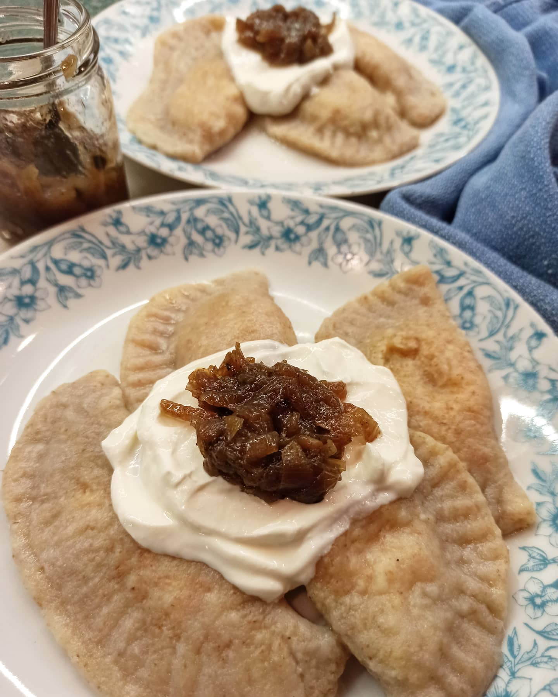

Bryndzové pirohy podľa @nase.tradicno — Normy Jedál
Aj vy máte radi tradičnú slovenskú kuchyňu?🇸🇰 Podľa mňa je to jedna z vecí, na ktoré môžeme byť v tejto krajine stále hrdí ❤️
A už ste niekedy skúsili bryndzové pirohy s kyslou smotanou a našou La Cibulou? Že nie? Chyba! #tochces 🤤
#našetradičnô #thisisslovakia #lacibula #cibula #pirohy #bryndzovepirohy #slovenske #praveslovenske #takeslovenske #dnesjem #dnesvarim #domace #slovenskejedlo #slovakfood #slovakblogger #slovakia #slovensko #loveslovakia #slovenskakuchyna #totojeslovensko #slovenska #kuchyna #folklore #slovakfolklore #mycountryhome #foodlovers #cookedwithlove #🇸🇰